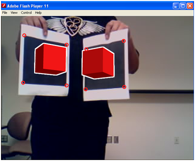
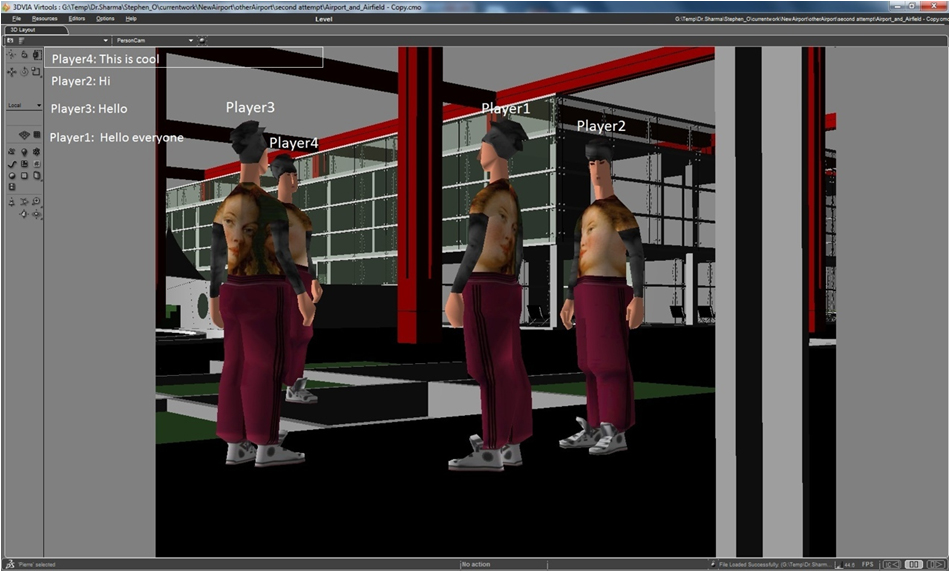

|
Targeted Infusion Project: Increasing Expertise of Minority Students by Development of a Virtual and Augmented Reality Laboratory for Research and Education at Bowie State University
funded by the National Science Foundation (NSF). Award Number: HRD-1137541, Award Period: 09/15/2011 to 08/31/2014. Award Amount: $299,489.
Project Director: Dr. Sharad Sharma
ABSTRACT

Bowie State University's (BSU) Targeted Infusion Project entitled - Increasing Expertise of Minority Students by Development of a Virtual and Augmented Reality Laboratory for Research and Education at Bowie State University - will enhance the computer science and mathematics curriculum and increase research opportunities for undergraduate students by deploying Virtual and Augmented Reality (VAR) as a research and educational vehicle to immerse students in research and critical thinking challenges. The Department of Computer Science enrolls about 250 undergraduate majors, most of whom are African-American. The students will gain experience by using state-of-the-art VR equipment, software and technologies including 3D Wall, Head Mounted Display (HMD) that allows students to visualize complex data in three dimensional (3D) objects, working in 3D space to solve complex spatial problems, and conducting novel research through course work and research experience in the laboratory.
The objectives of this proposal are to: 1) enhance the Virtual Reality course curriculum with more inquiry based problem-solving activities and hand-on experiences based on Virtual and Augmented Reality educational modules; 2) develop the Virtual and Augmented Reality Laboratory for research and education in the Computer Science Department to provide undergraduate students with realistic immersive learning environments; and 3) acquire instrumentation to further develop the teaching and research infrastructure in VAR laboratories. The project seeks to prepare computer science majors at BSU to be competitive to enter graduate programs and the workforce.
Students: Usha Govinaraju, Antoine Lathon, Titus Thomas, Jeff Ruffin, Sherrod Shelton, Kim Ta, Phillip Santiago, Taiysha Hobbes, and William Haong
Current Projects:
| |
Crowd behavior and traffic intersection problem in a Virtual City |
 |
We are developing a crowd behavior capability in a virtual city where there are traffic intersection junctions for people to cross over the road. We will generate a wide variety of civilian individual and group behaviors at differing levels of fidelity. Our simulation will consist of autonomous virtual human agents walking on the side walk in the virtual 3D environment. Agents will have 3D graphic body representations. They will be able to perform certain low-level actions like playing of pre-recorded animation sequences such as gestures or walking to specified location. |
| |
|
| |
Game-Theme Instructional Modules for Computer Science Students |
 |
The goal of this project is to create course curriculum modules for computer science and mathematics students using gaming metaphor. Engineering and Mathematic courses are typically considered as difficult by college students and exhibit high failure rate. Due to the complication and abstract nature of computer hardware, it is a challenge for students to understand the principles and concepts related to computer organization. The aim is to create course educational curriculum modules with more inquiry based problem-solving activities and hand-on experiences based on Virtual Reality/ Gaming/ Augmented Reality. We will create modules for arrays, linked list, memory mangament, trees, binary search, stacks, queues, etc. |
| |
|
| |
Android App for Emergency Response and Surveillance |
 |
The goal of this project is to develop an android application for emergency surveillance at BSU by using google latitude and longitude to determine the location of the user. It will provide safety decision making system for a school/university. We are using Eclipse IDE to add the google map with normal and satellite view into the application with a valid API key. We are also combining the geo-location and location manager with the map to get the current location of the user. Currently we are working on tracking multiple users and integrating augemtned reality markers on the campus map. |
| |
|
| |
Augmented Reality for Learning and Safety in a Emergencies: Use ARToolkit to create an emergency response system |
|  |
The goal of this project is to use ARTtoolkit and FLARToolKit to create a emergecny response system to help people evacuate a building. The system that give a visual represrentation of a building in 3D space, allowing people to see where exits are in the building. With FLARToolKit, an AS3 port of the Open Source library ARToolKit, one can detect a marker from an input image and calculate the camera position in 3D space. Our proposed solution would include putting the markers at key spots in the building, such that the user can use their smart phones to view the 3D representation of the building and exits. We are also exploring GPS, google maps, video to be integrated into the system. |
| |
|
 |
Modeling and simulation of emergency response and hazardous events for aviation safety
In this project, we simulate evacuation behavior in an aircraft using a crowd component. In passed years, there has only 2D simulation and this application can be used by airlines to simulate emergency scenarios without the use of live actors. This will allow airlines to run multiple simulation under a variety of conditions which will save time and lower costs. The application can also be adapted and expanded to other industries. |
| |
|
| |
Multi‐User Environment in VR for Evacuation Scenarios Using Gaming Metaphor |
|  |
Virtual Reality (VR) training has been used for training and education for many years in military and medical fields. We have used game creation as a metaphor in creating an experimental setup to study evacuation behavior. Our objective is to create an experimental design setup for assessing human behavior in emergency evacuation of an aircraft among a team of players in a game set in a virtual environment. Also, our aim is to create a multi user environment to allow participants in different geographical locations to connect and be able to interact in the VR environment. |
| |
|
Publications
- Sharma, S., Otunba,S.,"Collaborative Virtual Environment to Study Aircraft Evacuation for Training and Education", Proceedings of IEEE, International Workshop on Collaboration in Virtual Environments (CoVE -2012), as part of The 2012 International Conference on Collaboration Technologies and Systems (CTS 2012), Denver, Colorado, USA, may 21-25, 2012.
- Sharma, S., Otunba,S.,and Han, J., "Crowd Simulation in Emergency Aircraft Evacuation using Virtual Reality", Proceedings of IEEE, 16 th International Conference on Computer Games: AI, Animation, Mobile, Interactive Multimedia, Educational & Serious Games, (CGAMES), Kentucky, USA, July 27-30, 2011.
- Sharma, S and Otunba,S., “Virtual Reality as a Theme-Based Game Tool for Homeland Security Applications”, Proceedings of ACM Military Modeling & Simulation Symposium (MMS11), Boston, MA, USA, April 4 - 7, 2011.
- Sharma, S and Shete,S., “Virtual City: A gaming tool for training and education”, Proceedings of ISCA 26th International Conference on Computers and their Applications, New Orleans, Louisiana, USA, March 23-25, 2011.
Posters and Student Presentations
- Stephen Otunba and Dr. Sharad Sharma, "Evacuation Simulation in a Multiuser Virtual Reality Environment", Oral Presentation, at he Emerging Researchers National (ERN) Conference in Science, Technology, Engineering and Mathematics (STEM), hosted by AAAS, EHR and NSF, Atlanta, GA, February 23-25 2012.
- Aaron Boothe and Dr. Sharad Sharma, "Emergency Airplane Evacuation Using Game Development Toolkit", Oral Presentation, at he Emerging Researchers National (ERN) Conference in Science, Technology, Engineering and Mathematics (STEM), hosted by AAAS, EHR and NSF, Atlanta, GA, February 23-25 2012.[Won Second Prize in the oral section under category: Computer Sciences and Information Systems and Computer Engineering]
- Aaron Boothe, Mike Tice, Zachary Springer, and Dr. Sharad Sharma, "Multi‐User Environment in VR for Evacuation Scenarios Using Gaming Metaphor", Poster Presentation, at he Emerging Researchers National (ERN) Conference in Science, Technology, Engineering and Mathematics (STEM), hosted by AAAS, EHR and NSF, Atlanta, GA, February 23-25 2012.
 VR LABORATORY (C) 2011-2012, ALL RIGHTS RESERVED
VR LABORATORY (C) 2011-2012, ALL RIGHTS RESERVED |


{kind=link}
{kind=link}